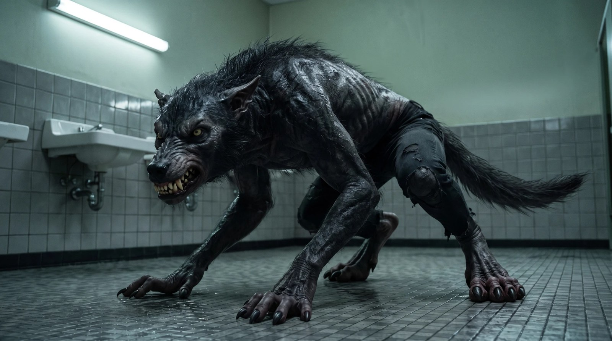
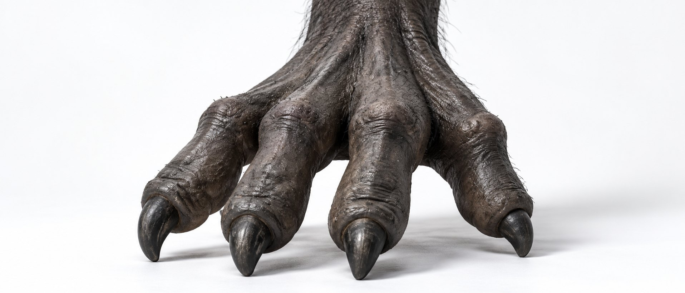
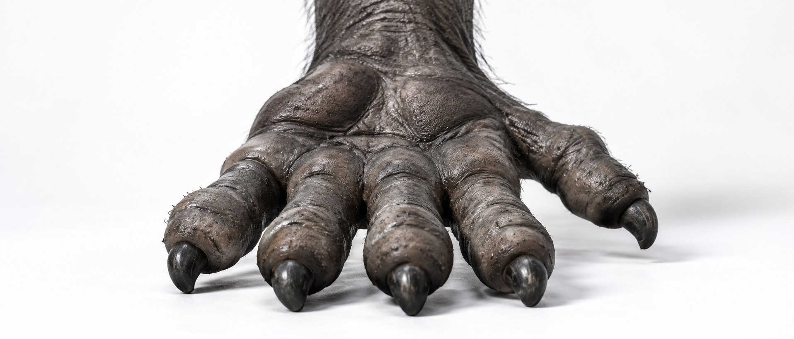

БӨРІ · БИБЛИЯ ПЕРСОНАЖА



1. Кто такой Бөрі
Огромное гуманоидное хищное существо, биологически правдоподобный оборотень. Он должен читаться как живой организм, снятый на площадке, а не как персонаж игры. Он не классический мохнатый оборотень: почти всё тело — голая чёрно-серая кожа, тяжёлая мускулатура, компактная волчья голова, огромные плечи, длинные руки и одна узкая полоса жёсткой чёрной шерсти от макушки по хребту в хвост. Пугает именно тем, что почти безволосый.
- Рост стоя: 210–220 см. Ощущение массы: 180–230 кг плотных мышц и костей.
- Не сухой, не супергерой, не бодибилдер. Плотный, тяжёлый, с переднеприводным центром тяжести.
- Умён. Не бешеный. Агрессия с намерением: наблюдает, держит взгляд, малые изменения лица страшнее крика.
2. Силуэт-подпись
Узнаваем даже как тёмное пятно: компактная брутальная волчья голова, маленькие уши, короткая широкая морда, маленькие жёлтые глаза, огромные трапеции и плечи, толстая шея, почти голое чёрно-серое тело в шрамах, очень длинные руки, крупные когтистые кисти, тёмные рваные штаны, тяжёлый хвост и узкая полоса шерсти от макушки по всему хребту в хвост.
3. Голова
- Череп: большой, широкий, тяжёлый, компактный; низкий широкий лоб, сильные надбровные дуги, глубокие глазницы, мощные жевательные мышцы.
- Морда: короткая, широкая, плотная. Никогда не длинная, не лисья, не «овчарка», не обычный волк. Выступает умеренно; при оскале глубокие складки на переносице.
- Нос: большой чёрный собачий, широкие ноздри, чуть неправильной формы, мокрая фактура с порами и трещинками. Не гладкий, не пластиковый.
- Глаза: маленькие относительно черепа, глубоко посажены. Цвет — грязный янтарно-жёлтый с вертикальным зрачком; белок почти не виден. Единственный тёплый цвет в кадре. Не светятся как лампочки, но ловят свет, как глаза зверя: в темноте видны только два глаза (референс режиссёра — «Схватка»).
- Уши: маленькие, компактные, гораздо меньше волчьих, высоко и чуть по бокам; толстый хрящ, лёгкая асимметрия, небольшие повреждения краёв (одни и те же во всех кадрах); в агрессии прижаты назад. Никаких больших «фэнтезийных» ушей.
- Рот: большой, тяжёлые чёрно-серые неровные губы, влажность. Закрыт — компактный. Оскал — верхняя губа поднимается асимметрично, видна десна. Без мультяшных гримас.
- Зубы: крупные, грязно-костяные, желтее к десне, неровные, разной длины, со сколами. Волчьи, не вампирские клыки, не белые «голливудские». Дёсны тёмно-красные. Слюна.
4. Кожа и цвет
- Цвет: угольно-чёрный / графитово-серый, холодный. Коричневого и тёплых подтонов нет (решение встречи 21.09: коричневый «менее страшный»). Натянутая кожа чуть светлее, глубокие складки почти чёрные.
- Фактура: толстая, грубая, как у слона или носорога: сеть мелких морщин, глубокие складки на суставах, поры, старые шрамы, растяжки, ссадины, неровная пигментация. Не гладкая, не латекс, не резина, не глянцевый CG.
- Влажность: выборочная. Высокие точки ловят узкий холодный блик, впадины остаются матовыми и тёмными.
- Лицо: самая тяжёлая фактура: складки лба, морщины вокруг глаз, складки вокруг носа и губ, редкие короткие волоски на щеках. Поры видны даже крупно.
Как материалы отвечают на свет
Кожа — матовое с влажными участками, поры. Волосы — тёмные, ломаные блики, отдельные пряди. Нос — сильный мокрый блик. Глаза — влажные отражения. Зубы — лёгкий мокрый блик эмали. Когти — низкий глянец кератина. Штаны — поглощают свет, слегка влажные.
5. Волосы
- Тело почти безволосое. Никакого меха. Редкие жёсткие чёрные волоски только на затылке, внешней стороне плеч, верхней части предплечий, локтях, голенях и небольших участках торса. Большие площади голой кожи всегда видны.
- Гребень по хребту — главный опознавательный знак. Одна непрерывная полоса жёсткой чёрной шерсти по средней линии спины: макушка → затылок → задняя сторона шеи → середина трапеций → между лопаток → грудной и поясничный отдел → крестец → основание хвоста → хвост. Никакого разрыва между волосами головы, гребнем и хвостом: одна биологическая система.
- Ширина полосы: голова и шея 8–14 см, верх спины 12–20 см, середина и низ спины 8–16 см. Не покрывает спину: 70–80 % спины остаётся голой кожей. Край неровный. Волосы почти чёрные, жёсткие, толстые, неровной длины, сальные, слипшиеся; часть стоит дыбом, часть лежит. В агрессии гребень на шее приподнимается. Не львиная грива, не ирокез, не украшение.
- Голова: верх и перед черепа почти голые, редкие волоски; к макушке гуще, и эта гуща переходит в гребень. Никакой человеческой причёски.
- Хвост: шерсть заметно гуще, чем на теле, но это продолжение гребня, а не «приклеенный» хвост.
6. Тело
- Пропорции: очень широкий плечевой пояс (шире, чем у человека того же роста), огромные трапеции, короткая бычья шея, голова будто утоплена между плеч, глубокая грудная клетка, талия уже плеч, но толстая; длинные руки, крупные предплечья, крупные кисти; массивные бёдра, сильные голени и лодыжки. Небольшие естественные асимметрии, без зеркальной симметрии.
- Стойка: почти никогда не выпрямляется полностью. Плечи вперёд, верх спины скруглён, шея сжата, голова ниже плеч, руки висят необычно низко, колени слегка согнуты. При угрозе центр тяжести резко падает.
- Передвижение: и на двух, и на четырёх конечностях. На четырёх остаётся гуманоидом с длинными руками, никогда не превращается в обычного волка на четырёх лапах.
- Шея: исключительно толстая и короткая; трапеции поднимаются почти к черепу; спереди и по бокам голая морщинистая кожа, сзади гребень; складки при повороте головы.
- Грудь и живот: почти голые, крупные грудные мышцы, не симметричные, старые шрамы. Живот сильный, но не «кубики»: группы мышц неровные, спрятаны под толстой кожей, складки при приседании. Рёбра проступают по бокам при наклоне.
- Спина: массивные трапеции и широчайшие, видна борозда позвоночника под гребнем, шрамы и зажившие царапины, гребень строго по центру.
- Руки: длинные, очень мускулистые, крупные предплечья, в основном голая кожа, сухожилия и деформация мышц под нагрузкой.
7. Кисть — по скульпту художника-постановщика (пластилин, 23.09)


- Четыре длинных рабочих пальца одной длины, трубчатые, без выраженных средних суставов, держатся вместе, а не растопырены как у человека.
- На конце каждого пальца тяжёлая круглая подушка-«шишка», из неё растёт короткий толстый конический коготь.
- Пятый, большой палец — маленький, с собственным когтем, сидит низко на внешней стороне запястья, торчит в сторону, в опоре не участвует.
- Длинная пясть, по тылу четыре сухожилия-валика, к запястью кисть сужается и переходит в толстое предплечье.
- Кожа — как на всём теле: чёрно-серая слоновья, складки у оснований пальцев и на запястье, редкий волос по тылу и предплечью. Когти тёмно-серые, матовые у основания, стёртые на кончиках.
- Кисть умеет хватать; вес несут средние пальцы.
8. Стопа (пока не выбрана)

- Рабочее описание, не утверждено: дигитиградная — стоит на пальцах, пятка поднята, длинная плюсна с сухожилиями под кожей.
- Четыре тяжёлых пальца с толстыми подушками и глубокими складками, тёмные конические когти длиной с фалангу; прибылой палец выше на плюсне, маленький, пола не касается.
- Кожа зернистая чёрно-серая, чуть светлее на складках; редкие волоски между пальцами.
- Стопа должна убедительно нести несколько сотен килограммов в движении: широкая опора, никаких хрупких лодыжек.
9. Хвост
Один длинный тяжёлый хвост от крестца, анатомически правдоподобный переход от позвоночника. Гребень перетекает на хвост без шва. Основание очень толстое, середина мускулистая, кончик тоньше. Шерсть чёрная, жёсткая, длинная, грязная, слипшаяся. Хвост подчиняется гравитации: в покое висит тяжело, в движении несёт инерцию и уравновешивает тело. Не декоративный, не невесомый. В темноте именно хвост делает силуэт «волком», а не большим человеком.
10. Шрамы
Много старых заживших повреждений, случайных и биологических, не декоративных: грудь — несколько неровных зажившихся царапин; плечи — старые порезы; руки — мелкие порезы и ссадины; верх спины — несколько неровных шрамов через голую кожу; бока — отдельные зажившие повреждения. Ткань шрамов разная: приподнятые бледно-серые, тёмные линии, розовато-серые, лёгкий келоид. Без свежих ран (если не нужно по сцене), без симметрии, без ритуальных узоров. Карта шрамов одна на все кадры.
11. Одежда
Один предмет: тёмные рваные штаны — уголь, вылинявший чёрный, тёмный графит; плотный хлопок, рабочая ткань. Старые, местами мокрые, грязные, натянуты на бёдрах, рваные на коленях, голенях, местами на бёдрах и по низу, с бахромой на разрывах. Никогда чистые и новые. Без рубашки, обуви, ремней, украшений, брони.
12. Движение
- Очень тяжёлый умный хищник: вес примата, суставы человека, намерение собаки. Каждое движение переносит массу: кисти вдавливаются в пол, мышцы деформируются, плечи перекатываются, гребень чуть отзывается, хвост балансирует. Никакой невесомости и акробатики.
- Низкое ползание (охота): тело предельно низко, плечи на уровне головы или выше, длинные руки вперёд, кисти распластаны, задние ноги поджаты, голова вперёд, взгляд на цели. Остаётся гуманоидом.
- Стоя: 210–220 см, слегка сгорблен, плечи очень широкие, руки висят низко, голова вынесена вперёд, гребень виден со спины, хвост висит за тазом.
- Контакт с поверхностью: пальцы расходятся естественно, кожа сжимается, мышцы включаются, есть контактные тени. В приседе бёдра сжимаются, живот складывается, плечи бугрятся, шея морщится.
13. Два канонических лица
- Нейтральное (для эталонных кадров): рот почти закрыт, челюсть тяжёлая, взгляд сфокусирован, уши нейтрально или чуть назад, без выражения.
- Агрессивное: голова чуть опущена, тяжёлая бровь, взгляд вперёд, уши назад, верхняя губа поднята, зубы видны, складки морды глубже, челюсть открыта ровно настолько, насколько нужно. Без мультяшного рёва.
14. Состояние и «не красить»
Никогда не ухожен: пот, влага, пыль, грязь в складках, слипшиеся волосы, умеренно и реалистично. Не делать его элегантным, симметричным, «модельным»; не чистить кожу, не укладывать волосы, не отбеливать зубы, не сглаживать шрамы и морщины. Несовершенства — часть идентичности.
15. Чего нет — абсолютные запреты
Сплошного меха; классического мохнатого оборотня; анатомии обычного волка; длинной морды; больших или эльфийских ушей; гривы вокруг шеи; шерсти на груди, животе и всей спине; разрыва между гребнем и хвостом; человеческой пятипалой кисти вместо кисти по скульпту; копыт, рогов, шипов; брони, украшений, рубашки, обуви; светящихся «неоновых» глаз; магических эффектов; чистой кожи; латексной фактуры; бодибилдерской идеальности; игровой, супергеройской, мультяшной анатомии; случайного передизайна от кадра к кадру.
16. Правило непрерывности
Каждый кадр показывает того же самого индивида, а не другого представителя вида: тот же череп, расстояние между глаз, морда, нос, уши, ширина плеч, длина рук, кисти, кожа, гребень, хвост, одежда, пропорции. Новый ракурс не меняет анатомию, новая эмоция не меняет лицо, новая локация не меняет цвет, новый свет не меняет материалы. Спереди — короткая морда и широкий череп; в профиль морду не удлинять; со спины виден гребень; в три четверти сзади гребень переходит в хвост; сбоку хвост растёт из таза.
17. Открытые вопросы — сводка
| # | Вопрос | Предложение Alexis |
|---|---|---|
| 1 | Кисть: 4 пальца + большой (скульпт) или 5 человеческих | Скульпт Алии |
| 2 | Штаны: джинсы или трико; майка лоскутами — да/нет | Трико тёмное, майки нет |
| 3 | Стопа: скульпт или рисунок от Алии | Ждём художника |
| 4 | Рост: 210 или 220 см | 215 см |
| 5 | Цвет фильма (страница «Цвет» на сайте): A, B, C или D | A или B |
Приложение. Блоки для генерации (англ.)
Три коротких лока вместо полного текста: они вставляются в каждый промпт целиком, а сцена описывается отдельно. Полный русский текст выше — для команды и грима.
BORI CANON
BORI FACE LOCK
BORI BODY / HANDS / FEET LOCK
NEGATIVES
Источники: KANON-BORI-21-09.md (решения встречи 21.09), OPISANIE-VOLKA-KANON.md (22.09), скульпты Алии (21–23.09), черновик CANON MASTER v2.0 (23.09). Подготовил Alexis, AI-ассистент проекта. 24.09.2026.
См. также: аватар BORI · цвет фильма